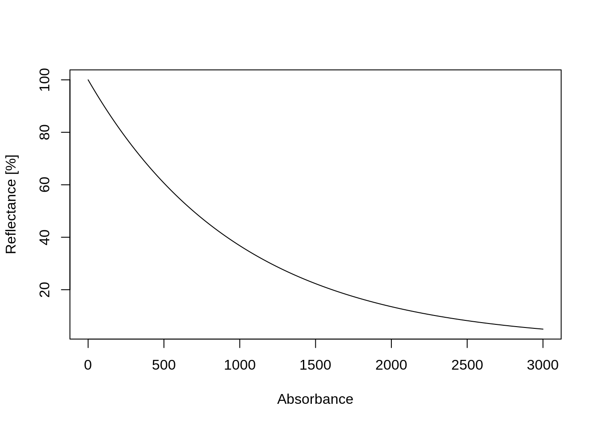

4 Database
4.1 Sites table
Observations and measurements at site. For the site table please use (at least) the following columns.
4.1.1 id.layer_uuid_c
Unique layer ID: Should be best generated using some UUID generator tool; example: id.layer_uuid_c = '672d1fd6-b186-11eb-8a61-7446a0925130'
4.1.2 id.location_olc_c
Unique Open Location Codes: ID which identifies the site location; example: id.location_olc_c = '84MVX5FH+PJ'
We recommend rounding the latitude and longitude coordinates to 6 decimal places.
4.1.3 observation.ogc.schema.title_ogc_txt
Observation OGC schema title; example: observation.ogc.schema.title_ogc_txt = 'Open Soil Spectral Library Schema'
4.1.4 observation.ogc.schema_idn_url
Observation OGC schema URL; example: observation.ogc.schema_idn_url = 'https://github.com/soilspectroscopy/'
4.1.5 observation.date.begin_iso.8601_yyyy.mm.dd
Observation date begin (ISO8601); example: observation.date.begin_iso.8601_yyyy.mm.dd = '2000.02.10'
4.1.6 observation.date.end_iso.8601_yyyy.mm.dd
Observation date end (ISO8601); example: observation.date.end_iso.8601_yyyy.mm.dd = '2000.02.10'
4.1.7 location.address_utf8_txt
Location address as Street and number, Local postcode, Town, County, State; example: location.address_utf8_txt = ''
4.1.8 location.country_iso.3166_c
Country(ies) the data was/were collected (ISO3166); example: location.country_iso.3166_c = 'USA'
4.1.9 location.method_any_c
Location method e.g. GPS; example: location.method_any_c = 'GPS'
4.1.10 surveyor.title_utf8_txt
Field surveyor title or organization; example: surveyor.title_utf8_txt = 'USDA Natural Resource Conservation Service (NRCS) staff'
4.1.11 surveyor.contact_ietf_email
Field surveyor contact email; example: surveyor.contact_ietf_email = 'support@usda.gov'
4.1.12 surveyor.address_utf8_txt
Field surveyor address as Street and number, Local postcode, Town, County, State; example: surveyor.address_utf8_txt = 'USDA-NRCS-NSSC, Federal Building, Room 152, Mail Stop, 100 Centennial Mall North, Lincoln, NE'
4.1.13 longitude_wgs84_dd
Site WGS84 longitude coordinate; example: longitude_wgs84_dd = '-122.8208847'
4.1.14 latitude_wgs84_dd
Site WGS84 latitude coordinate; example: latitude_wgs84_dd = '43.9742584'
4.1.15 location.error_any_m
Approximate location error (for GPS coordinates use 30 m); example: location.error_any_m = '30'
4.1.16 dataset.title_utf8_txt
Title of the dataset; example: dataset.title_utf8_txt = 'Kellog's lab SSL'
4.1.17 dataset.owner_utf8_txt
Name of organization that is the dataset owner;
4.1.18 dataset.code_ascii_txt
Code identification of the dataset; example: dataset.code_ascii_txt = 'KSSL'
4.1.19 dataset.address_idn_url
The URL address of the dataset web page; example: dataset.address_idn_url = 'https://ncsslabdatamart.sc.egov.usda.gov/'
4.1.20 dataset.license.title_ascii_txt
Data license title for the dataset; example: dataset.license.title_ascii_txt = 'CC-0'
4.1.21 dataset.license.address_idn_url
Data license URL for the dataset; example: dataset.license.address_idn_url = 'https://creativecommons.org/share-your-work/public-domain/cc0/'
4.1.22 dataset.doi_idf_c
International DOI foundation code for the corresponding dataset version; example: dataset.doi_idf_c = '10.2136/sssaj2019.06.0205'
4.1.23 dataset.contact.name_utf8_txt
Person responsible for the dataset; example: dataset.contact.name_utf8_txt = 'Firstname Lastname'
4.1.24 dataset.contact.email_ietf_email
Email contact of the person responsible for the dataset; example: dataset.contact.email_ietf_email = 'support@usda.gov'
4.1.25 id.dataset.site_ascii_c
Local dataset ID of the site; example: id.dataset.site_ascii_c = '603'
4.1.26 id.user.site_ascii_c
Local user assigned ID of the site; example: id.user.site_ascii_c = '01-DRJ-01'
4.1.27 id.project_ascii_c
Unique project code; example: id.project_ascii_c = 'TEX18'
4.1.28 pedon.taxa_usda_c
Soil classification based on the USDA Keys to Soil Taxonomy; example: pedon.taxa_usda_c = 'Mollisols_Ustolls_Haplustolls'.
Complete list of possible great groups is available here.
4.2 Soillab table
4.2.1 id.layer_uuid_c
Unique site ID generated using some UUID generator tool; example: id.site_uuid_c = '672d1fd6-b186-11eb-8a61-7446a0925130'
This ID links with the Sites table.
4.2.2 id.layer_local_c
Local original layer ID; example: id.site_uuid_c = '456002'
This ID links with the Sites table.
4.2.3 sample.doi_idf_c
Unique DOI that can be used when citing the dataset; example: sample.doi_idf_c = '10.3390/s20236729'
4.2.4 layer.sequence_usda_uint16
Layer sequence number based on the USDA system; example: layer.sequence_usda_uint16 = '1'
4.2.5 layer.type_usda_c
Layer type based on the USDA system; example: layer.type_usda_c = 'horizon'
4.2.6 layer.field.label_any_c
Layer field label used e.g. for soil samples; example: layer.field.label_any_c = 'S00OR-039-001-2'
4.2.7 layer.upper.depth_usda_cm
Layer upper depth in cm; example: layer.upper.depth_usda_cm = '13'
4.2.8 layer.lower.depth_usda_cm
Layer lower depth in cm; example: layer.lower.depth_usda_cm = '36'
4.2.9 horizon.designation_usda_c
Layer horizon designation based on the USDA system; example: horizon.designation_usda_c = 'A2'
4.2.10 horizon.designation.discontinuity_usda_c
Layer horizon designation discontinuity based on the USDA system; example: horizon.designation.discontinuity_usda_c = ''
4.2.11 layer.structure.type_usda_c
Layer horizon structure type based on the USDA system; example: layer.structure.type_usda_c = ''
4.2.12 layer.structure.grade_usda_c
Layers horizon structure grade based on the USDA system; example: layer.structure.grade_usda_c = ''
4.2.13 layer.texture_usda_c
Layer field-estimated texture-by-hand class based on the USDA system; example: layer.texture_usda_c = 'Gravelly Clay'
To estimate the field texture-by-hand please follow these guidelines.
4.2.14 sand.tot_usda.3a1_wpct
Total sand content; description: sand.tot_usda.3a1_wpct = Total sand is the soil separate with 0.05 to 2.0 mm particle diameter. It is reported a gravimetric percent on a <2 mm base. H prep.
- 🆔
codesand.tot_usda.3a1_wpct
- 📚 Measurement unit: weight percent
- 🔬 Laboratory method: Particle-Size Distribution Analysis using Pipette
- 📖 Scientific reference: USDA NRCS (2019)
openair::scatterPlot(kssl.yw, x = "depth", y = "sand.tot_usda.3a1_wpct", method = "hexbin",
col = "increment", log.x = TRUE, log.y=TRUE, ylab="Sand wpct", xlab="depth in cm")
Figure 4.1: Soil-depth histogram for total sand content in wpct.
Figure 4.2: Total sand content in weight percent histograms.
4.2.15 sand.tot_iso.11277.2020_wpct
Total laboratory-estimated sand (0.05 to 2.0 mm particle diameter) based on ISO 11277:2020(en)
Soil quality — Determination of particle size distribution in mineral soil material — Method by sieving and sedimentation.
4.2.16 silt.tot_usda.3a1_wpct
Total silt content; description: silt.tot_usda.3a1_wpct = Total silt is the soil separate with 0.002 to 0.05 mm particle size. It is reported as a gravimetric percent on a <2 mm base.
- 🆔
codesilt.tot_usda.3a1_wpct
- 📚 Measurement unit: weight percent
- 🔬 Laboratory method: Particle-Size Distribution Analysis using Pipette
- 📖 Scientific reference: USDA NRCS (2019)
openair::scatterPlot(kssl.yw, x = "depth", y = "silt.tot_usda.3a1_wpct", method = "hexbin",
col = "increment", log.x = TRUE, log.y=TRUE, ylab="Silt wpct", xlab="depth in cm")Figure 4.3: Soil-depth histogram for total silt content in wpct.
Figure 4.4: Total silt content in weight percent histograms.
4.2.17 silt.tot_iso.11277.2020_wpct
Total laboratory-estimated silt (0.002 to 0.05 mm particle size) based on ISO 11277:2020(en)
Soil quality — Determination of particle size distribution in mineral soil material — Method by sieving and sedimentation.
4.2.18 clay.tot_usda.3a1_wpct
Total clay content; description: clay.tot_usda.3a1_wpct = Total clay is the soil separate with <0.002 mm particle diameter. Clay size carbonate is included. Total clay is reported as a weight percent of the <2 mm fraction.
- 🆔
codeclay.tot_usda.3a1_wpct
- 📚 Measurement unit: weight percent
- 🔬 Laboratory method: Particle-Size Distribution Analysis using Pipette
- 📖 Scientific reference: USDA NRCS (2019)
openair::scatterPlot(kssl.yw, x = "depth", y = "clay.tot_usda.3a1_wpct", method = "hexbin",
col = "increment", log.x = TRUE, log.y=TRUE, ylab="Clay wpct", xlab="depth in cm")Figure 4.5: Soil-depth histogram for total clay in wpct.

Figure 4.6: Total clay content in weight percent histograms.
4.2.19 clay.tot_iso.11277.2020_wpct
Total clay (<0.002 mm particle diameter) based on ISO 11277:2020(en)
Soil quality — Determination of particle size distribution in mineral soil material — Method by sieving and sedimentation.
4.2.20 wpg2_usda.3a2_wpct
Coarse Fragments, Greater than 2mm; description: wpg2_usda.3a2_wpct = The gravimetric percentage of greater than 2 mm diameter particles reported on a whole soil base.
- 🆔
wpg2_usda.3a2_wpct
- 📚 Measurement unit: weigth percent
- 🔬 Laboratory method: Particle-Size Distribution Analysis by weight estimates
- 📖 Scientific reference: Grossman and Reinsch (2002), Testing et al. (2006)
openair::scatterPlot(kssl.yw, x = "depth", y = "wpg2_usda.3a2_wpct", method = "hexbin",
col = "increment", log.x = TRUE, log.y=TRUE, ylab="WPG2 wpct", xlab="depth in cm")Figure 4.7: Soil-depth histogram for coarse fragments in wpct.
Figure 4.8: Coarse fragments in weight percent histograms.
4.2.21 wpg2_iso.11277.2020_wpct
The gravimetric percentage of coarse fragments greater than 2 mm diameter particles reported on a whole soil base based on ISO 11277:2020(en)
Soil quality — Determination of particle size distribution in mineral soil material — Method by sieving and sedimentation.
4.2.22 wr.1500kbar_usda.3c2_wpct
Water Retention, 15 Bar, <2mm, Air-dry (Permanent Wilting Point); description: wr.1500kbar_usda.3c2_wpct = 15 bar water on air dry soil is the gravimetric water content of <2 mm air dry samples after equilibration at 15 bars water tension. It is reported on a <2 mm base. The value is influenced by clay %, mineralogy, and organic carbon %.
- 🆔
wr.1500kbar_usda.3c2_wpct
- 📚 Measurement unit: weight percent
- 🔬 Laboratory method: Pressure-Membrane Extraction
- 📖 Scientific reference: USDA NRCS (2019)
openair::scatterPlot(kssl.yw, x = "depth", y = "wr.1500kbar_usda.3c2_wpct", method = "hexbin",
col = "increment", log.x = TRUE, log.y=TRUE, ylab="PWP wprm", xlab="depth in cm")
Figure 4.9: Soil-depth histogram for Water Retention at 15 Bar (Permanent Wilting Point) in wpct.
Figure 4.10: Organic carbon in weight percent histograms.
4.2.23 wr.33kbar_usda.3c1_wpct
Water Retention, 1/3 Bar, <2mm Clod; description: wr.33kbar_usda.3c1_wpct = 1/3 bar water, clods is the gravimetric percent water in natural fabric (clods) after equilibration at 1/3 bar water tension. It is reported on a <2 mm base.
- 🆔
wr.33kbar_usda.3c1_wpct
- 📚 Measurement unit: weight percent
- 🔬 Laboratory method: Pressure-Membrane Extraction
- 📖 Scientific reference: USDA NRCS (2019)
openair::scatterPlot(kssl.yw, x = "depth", y = "wr.33kbar_usda.3c1_wpct", method = "hexbin",
col = "increment", log.x = TRUE, log.y=TRUE, ylab="FC wpct", xlab="depth in cm")Figure 4.11: Soil-depth histogram for Water Retention at 1/3 Bar (Field Capacity) in wpct.

Figure 4.12: Water Retention at 1/3 Bar in weight percent histograms.
4.2.24 agg.stb_usda.1b1_wpct
Aggregate stability; description: aggstb_usda.1b1_wpct = Aggregate stability is the weight percent of 0.5mm - 2mm aggregates remaining after wet sieving.
4.2.25 bd.clod_usda.3b1_gcm3
Bulk density clod, <2 mm fraction, 1/3 bar; description: bd.clod_usda.3b1_gcm3 = Bulk density, <2 mm fraction, 1/3 bar is the weight per unit volume of the <2 mm fraction, with volume being measured after equilibration at 1/3 bar water tension. It is reported as grams per cubic centimeter on a <2 mm base.
4.2.26 bd.od_usda.3b2_gcm3
Bulk density, Oven-Dry, <2 mm fraction; description: bd.od_usda.3b4_gcm3 = Bulk density, <2mm fraction, field moist is the weight per unit volume of the <2 mm fraction, with volume measured at field (sampling) moisture. Measurements are made on known volume cores. It is reported as grams per cubic centimeter, <2 mm base.
- 🆔
bd.od_usda.3b2_gcm3
- 📚 Measurement unit: g/cm3
- 🔬 Laboratory method: Oven-Dry
- 📖 Scientific reference: Grossman and Reinsch (2002)
openair::scatterPlot(kssl.yw, x = "depth", y = "bd.od_usda.3b2_gcm3", method = "hexbin",
col = "increment", log.x = TRUE, log.y=TRUE, ylab="BD t/m3", xlab="depth in cm")Figure 4.13: Soil-depth histogram for Bulk density in t/m3.
Figure 4.14: Bulk density in t/m3 percent histograms.
4.2.27 bd.core_iso.11272.2017_gcm3
Dry bulk density based on ISO 11272:2017(en)
Soil quality — Determination of dry bulk density.
4.2.28 c.tot_usda.4h2_wpct
Total carbon; description: c.tot_usda.4h2_wpct = Total carbon is a measure of all organic and inorganic carbon, including that found in carbonate minerals.
- 🆔
c.tot_usda.4h2_wpct
- 📚 Measurement unit: weigth percent
- 🔬 Laboratory method: Walkley-Black
- 📖 Scientific reference: Nelson and Sommers (1983)
openair::scatterPlot(kssl.yw, x = "depth", y = "c.tot_usda.4h2_wpct", method = "hexbin",
col = "increment", log.x = TRUE, log.y=TRUE, ylab="SOC wprm", xlab="depth in cm")Figure 4.15: Soil-depth histogram for total carbon in wpct.
Figure 4.16: Total carbon in weight percent histograms.
4.2.29 c.tot_iso.10694.1995_wpct
Total soil carbon based on ISO 10694:1995(en) Soil quality — Determination of organic and total carbon after dry combustion (elementary analysis).
4.2.30 n.tot_usda.4h2_wpct
Total nitrogen; description: n.tot_usda.4h2_wpct = Total nitrogen is a measure of all organic and inorganic nitrogen, including that found in nitrogen minerals.
- 🆔
n.tot_usda.4h2_wpct
- 📚 Measurement unit: weight percent
- 🔬 Laboratory method: Dry oxidation (combustion) procedure
- 📖 Scientific reference: Bremner (1996)
openair::scatterPlot(kssl.yw, x = "depth", y = "n.tot_usda.4h2_wpct", method = "hexbin",
col = "increment", log.x = TRUE, log.y=TRUE, ylab="N wpct", xlab="depth in cm")Figure 4.17: Soil-depth histogram for total N in wpct.
Figure 4.18: Total N in weight percent histograms.
4.2.31 n.tot_iso.13878.1998_wpct
Total nitrogen based on ISO 13878:1998(en)
Soil quality — Determination of total nitrogen content by dry combustion (“elemental analysis”).
4.2.32 s.tot_usda.4h2_wpct
Total sulfur; description: s.tot_usda.4h2_wpct = Total sulfur is a measure of all organic and inorganic sulfur, including that found in sulfide minerals.
4.2.33 oc_usda.calc_wpct
Organic carbon in weight percent (dag/kg); description: oc_usda.calc_wpct = Estimated (calculated) Organic Carbon based on Total C minus the inorganic carbon, GP prep.
- 🆔
oc_usda.calc_wpct
- 📚 Measurement unit: weight percent
- 🔬 Laboratory method: Walkley-Black organic C method
- 📖 Scientific reference: Nelson and Sommers (1983)
openair::scatterPlot(kssl.yw, x = "depth", y = "oc_usda.calc_wpct", method = "hexbin",
col = "increment", log.x = TRUE, log.y=TRUE, ylab="SOC wprm", xlab="depth in cm")Figure 4.19: Soil-depth histogram for soil organic carbon in wpct.
Figure 4.20: Organic carbon in weight percent histograms.
4.2.34 oc_usda.4h2_wpct
Organic carbon based on dry combustion in weight percent (dag/kg); description: oc_usda.4h2_wpct = CMS analyte equivalent to the Walkley-Black organic C method. Organic carbon is a measure of all organic forms of carbon in the soil, including organic carbon within minerals.
4.2.35 oc_iso.10694.1995_wpct
Organic carbon based on ISO 10694:1995(en) Soil quality — Determination of organic and total carbon after dry combustion (elementary analysis).
4.2.36 oc_iso.17184.2014_wpct
Organic carbon based on ISO 17184:2014(en)
Soil quality — Determination of carbon and nitrogen by near-infrared spectrometry (NIRS).
4.2.37 humus_usda.4h2_wpct
Organic matter or humus content; description: humus_usda.4h2_wpct = Total organic matter in weight percent (dag/kg) lost on ignition (400°C) (LOI). Values for organic C can be determined by using the “Van Bemmelen factor” (1/1.724 = 0.58) to calculate organic carbon.
4.2.38 caco3.pres_usda.1b1_c
Effervescence, 1N HCl; description: caco3.pres_usda.1b1_c = The visual effervescence of the prepared sample when treated with 1N HCl.
4.2.39 caco3_usda.4e1_wpct
Calcium carbonate content; description: caco3_usda.4e1_wpct = Carbonate in the < 2mm fraction is measured by CO2 evolution after acid treatment. It is reported as gravimetric percent CaCO3 on a <2 mm base, even though carbonates of Mg, Na, K, and Fe may be present and react with the acid.
- 🆔
caco3_usda.4e1_wpct
- 📚 Measurement unit: weight percentage
- 🔬 Laboratory method: 3 N HCl Treatment
- 📖 Scientific reference: Loeppert, Suarez, and others (1996)
openair::scatterPlot(kssl.yw, x = "depth", y = "caco3_usda.4e1_wpct", method = "hexbin",
col = "increment", log.x = TRUE, log.y=TRUE, ylab="CaCO3 wpct", xlab="depth in cm")Figure 4.21: Soil-depth histogram for CaCO3 in wpct.
Figure 4.22: Organic carbon in weight percent histograms.
4.2.40 caco3_iso.10693.1995_vpct
Total carbonate in the < 2mm fraction (measured by CO2 evolution after acid treatment) based on ISO 10693:1995
Soil quality — Determination of carbonate content — Volumetric method.
4.2.41 ca.ext_usda.4b1_cmolkg
Calcium, NH4OAc Extractable, 2M KCl displacement; description: ca.ext_usda.4b1_cmolkg = NH4OAC extractable calcium is the fraction removed by pH 7.0 NH4OAC. It is assumed to represent the exchangeable Ca. It is reported as meq per 100 grams on a <2 mm base. It is not reported for samples containing carbonates or soluble salts.
- 🆔
ca.ext_usda.4b1_cmolkg
- 📚 Measurement unit: cmol/kg
- 🔬 Laboratory method: Displacement after Washing, NH4OAC, pH 7 / Atomic Absorption Spectrophotometer
- 📖 Scientific reference: Thomas (1982)
openair::scatterPlot(kssl.yw, x = "depth", y = "ca.ext_usda.4b1_cmolkg", method = "hexbin",
col = "increment", log.x = TRUE, log.y=TRUE, ylab="ExCa cmol/kg", xlab="depth in cm")Figure 4.23: Soil-depth histogram for Calcium, NH4OAc Extractable in cmol/kg.
Figure 4.24: Calcium, NH4OAc Extractable in cmol/kg histograms.
4.2.42 cec.ext_usda.4b1_cmolkg
Cation Exchange Capacity (CEC), NH4OAc, pH 7.0, 2M KCl displacement; description: cec.ext_usda.4b1_cmolkg = CEC by NH4OAC is the Cation Exchange Capacity of the sample, determined by 1N NH4OAC in a system highly buffered at pH 7.0 The NH4 is displaced by 2M KCl to obtain a solution without solids. It is reported as meq per 100 grams sample, on a <2 mm base.
- 🆔
cec.ext_usda.4b1_cmolkg
- 📚 Measurement unit: cmol/kg
- 🔬 Laboratory method: Displacement after Washing, NH4OAC, pH 7 / Atomic Absorption Spectrophotometer
- 📖 Scientific reference: Thomas (1982)
openair::scatterPlot(kssl.yw, x = "depth", y = "cec.ext_usda.4b1_cmolkg", method = "hexbin",
col = "increment", log.x = TRUE, log.y=TRUE, ylab="CEC in cmol/kg", xlab="depth in cm")Figure 4.25: Soil-depth histogram for CEC in cmol/kg.
Figure 4.26: CEC in cmol/kg histograms.
4.2.43 cec.ext_iso.13536.1995_cmolkg
Cation Exchange Capacity based on ISO 13536:1995(en)
Soil quality — Determination of the potential cation exchange capacity and exchangeable cations using barium chloride solution buffered at pH = 8.1.
4.2.44 ecec_usda.4b4_cmolkg
Effective Effective Cation Exchange Capacity; description: ecec_usda.4b4_cmolkg = Sum of bases + AL_KCL the effective cation exchange capacity is calculated by BASE_SUM+AL_KCL. It is not calculated if soluble salts are present. It is reported as meq per 100 grams on a <2 mm base.
- 🆔
ecec_usda.4b4_cmolkg
- 📚 Measurement unit: cmol/kg
- 🔬 Laboratory method: Displacement after Washing, NH4OAC, pH 7 / Atomic Absorption Spectrophotometer
- 📖 Scientific reference: Sumner and Miller (1996)
openair::scatterPlot(kssl.yw, x = "depth", y = "ecec_usda.4b4_cmolkg", method = "hexbin",
col = "increment", log.x = TRUE, log.y=TRUE, ylab="ECEC in cmol/kg", xlab="depth in cm")Figure 4.27: Soil-depth histogram for ECEC in cmol/kg.
Figure 4.28: ECEC in cmol/kg histograms.
4.2.45 mg.ext_usda.4b1_cmolkg
Magnesium, NH4OAc Extractable, 2M KCl displacement; description: mg.ext_usda.4b1_cmolkg = NH4OAC extractable magnesium is the fraction removed by pH 7.0 NH4OAC. It is assumed to represent the exchangeable Mg if MgCO3 is not present. It is reported as meq per 100 grams on a <2 mm base.
- 🆔
mg.ext_usda.4b1_cmolkg
- 📚 Measurement unit: cmol/kg
- 🔬 Laboratory method: Displacement after Washing, NH4OAC, pH 7 / Atomic Absorption Spectrophotometer
- 📖 Scientific reference: Thomas (1982)
openair::scatterPlot(kssl.yw, x = "depth", y = "mg.ext_usda.4b1_cmolkg", method = "hexbin",
col = "increment", log.x = TRUE, log.y=TRUE, ylab="ExMg in cmol/kg", xlab="depth in cm")Figure 4.29: Soil-depth histogram for Magnesium, NH4OAc Extractable in cmol/kg.
Figure 4.30: Magnesium, NH4OAc Extractable in cmol/kg histograms.
4.2.46 k.ext_usda.4b1_cmolkg
Potassium, NH4OAc Extractable, 2M KCl displacement; description: k.ext_usda.4b1_cmolkg = NH4OAC extractable potassium is the fraction removed by pH 7.0 NH4OAC. It is assumed to represent the exchangeable K. It is reported as meq per 100 grams on a <2 mm base.
- 🆔
k.ext_usda.4b1_cmolkg
- 📚 Measurement unit: cmol/kg
- 🔬 Laboratory method: Displacement after Washing, NH4OAC, pH 7 / Atomic Absorption Spectrophotometer
- 📖 Scientific reference: Thomas (1982)
openair::scatterPlot(kssl.yw, x = "depth", y = "k.ext_usda.4b1_cmolkg", method = "hexbin",
col = "increment", log.x = TRUE, log.y=TRUE, ylab="ExK in cmol/kg", xlab="depth in cm")Figure 4.31: Soil-depth histogram for Potassium, NH4OAc Extractable in cmol/kg.
Figure 4.32: Potassium, NH4OAc Extractable in cmol/kg histograms.
4.2.47 na.ext_usda.4b1_cmolkg
Sodium, NH4OAc Extractable, 2M KCl displacement; description: na.ext_usda.4b1_cmolkg = NH4OAC extractable sodium is the fraction removed by pH 7.0 NH4OAC. It is assumed to represent the exchangeable Na. It is reported as meq per 100 grams on a <2 mm base.
- 🆔
na.ext_usda.4b1_cmolkg
- 📚 Measurement unit: cmol/kg
- 🔬 Laboratory method: Displacement after Washing, NH4OAC, pH 7 / Atomic Absorption Spectrophotometer
- 📖 Scientific reference: Thomas (1982)
openair::scatterPlot(kssl.yw, x = "depth", y = "na.ext_usda.4b1_cmolkg", method = "hexbin",
col = "increment", log.x = TRUE, log.y=TRUE, ylab="ExNa in cmol/kg", xlab="depth in cm")Figure 4.33: Soil-depth histogram for Sodium, NH4OAc Extractable in cmol/kg.
Figure 4.34: Sodium, NH4OAc Extractable histograms.
4.2.48 fe.ox_usda.4g2_wpct
Iron, ammonium oxalate extractable; description: fe.ox_usda.4g2_wpct = Ammonium oxalate extractable iron is considered a measure of the noncrystalline Fe in soils. It provides some inferences of the amount of Fe in various forms. It is reported as gravimetric % on a <2mm base.
4.2.49 fe.dith_usda.4g1_wpct
Iron, dithinoite-citrate extractable; description: fe.dith_usda.4g1_wpct = Dithionite citrate extractable iron is considered a general measure of total pedogenic iron. It provides inferences on the amount of iron in various forms, P fixing potential, aggregate stability, and degree of weathering. Reported as grav % on <2mm.
4.2.50 fe.pyp_usda.4g3_wpct
Iron, sodium pyrophosphate extractable; description: fe.pyp_usda.4g3_wpct = Sodium pyrophosphate extractable iron is assumed to be the fraction associated with organic complexes. It is reported as gravimetric percent on a <2 mm base.
4.2.51 al.ox_usda.4g2_wpct
Aluminum, ammonium oxalate extractable; description: al.ox_usda.4g2_wpct = Ammonium oxalate extractable aluminum is an estimate of the total pedogenic Al, much of which may be in noncrystalline materials or complexed by organic matter. It is reported as gravimetric percent on a <2 mm base.
4.2.52 al.dith_usda.4g1_wpct
Aluminum, dithinoite-citrate extractable; description: al.dith_usda.4g1_wpct = Dithionite citrate extractable aluminum is an indicator of the amount of aluminum substituted for iron in iron oxides. It does not necessarily represent total pedogenic Al.
4.2.53 al.pyp_usda.4g3_wpct
Aluminum, sodium pyrophosphate extractable; description: al.pyp_usda.4g3_wpct = Sodium pyrophosphate extractable aluminum is the fraction extracted by 0.1M sodium pyrophosphate. It was originally considered the portion associated with organic compounds, although subsequent evidence indicates other forms are also removed.
4.2.54 al.kcl_usda.4b3_cmolkg
Aluminum, KCl extractable; description: al.kcl_usda.4b3_cmolkg = KCl extractable aluminum approximates the exchangeable Al, and is a measure of the active acidity present in soils with a 1:1 water pH less than 5.5. It relates to the immediate lime requirement and the CEC of the soil.
- 🆔
al.kcl_usda.4b3_cmolkg
- 📚 Measurement unit: cmol/kg
- 🔬 Laboratory method: KCl extractable
- 📖 Scientific reference: Thomas (1982)
openair::scatterPlot(kssl.yw, x = "depth", y = "al.kcl_usda.4b3_cmolkg", method = "hexbin",
col = "increment", log.x = TRUE, log.y=TRUE, ylab="ExAl in cmol/kg", xlab="depth in cm")Figure 4.35: Soil-depth histogram for Aluminum, KCl extractable in cmol/kg.
Figure 4.36: Aluminum, KCl extractable in cmol/kg histograms.
4.2.55 bsat_usda.4b4_wpct
Base saturation, NH4OAc, pH7; description: bsat_usda.4b4_wpct = NH4OAC base saturation (pH 7.0) is calculated by (BASE_SUM/CEC_NH4)*100.
- 🆔
bsat_usda.4b4_wpct
- 📚 Measurement unit: weight percent
- 🔬 Laboratory method: Displacement after Washing, NH4OAC, pH 7 / Atomic Absorption Spectrophotometer
- 📖 Scientific reference: Thomas (1982)
openair::scatterPlot(kssl.yw, x = "depth", y = "bsat_usda.4b4_wpct", method = "hexbin",
col = "increment", log.x = TRUE, log.y=TRUE, ylab="BS in wpct", xlab="depth in cm")Figure 4.37: Soil-depth histogram for Base saturation in wpct.
Figure 4.38: Base saturation in weight percent histograms.
4.2.56 alsat_usda.4b4_wpct
Aluminum saturation; description: alsat_usda.4b4_wpct = Aluminum saturation is calculated by (AL_KCL/(Sum of bases))*100. It provides some inference of potential Al toxicity problems, although many other factors influence Al toxicity.
4.2.57 ph.h2o_usda.4c1_index
Soil pH 1:1 water; description: ph.h2o_usda.4c1_index = The pH, 1:1 soil-water suspension is the pH of a sample measured in distilled water at a 1:1 soil:solution ratio. If wider ratios increase the pH, salts are indicated.
- 🆔
ph.h2o_usda.4c1_index
- 📚 Measurement unit: index
- 🔬 Laboratory method: Soil suspension combination pH-Reference Electrode
- 📖 Scientific reference: McLean (1983)
openair::scatterPlot(kssl.yw, x = "depth", y = "ph.h2o_usda.4c1_index", method = "hexbin",
col = "increment", log.x = TRUE, ylab="Soil pH", xlab="depth in cm")Figure 4.39: Soil-depth histogram for soil pH.
Figure 4.40: Soil pH 1:1 water histograms.
4.2.58 ph.cacl2_usda.4c1_index
Soil pH 1:2 0.01-M calcium chloride; description: ph.cacl2_usda.4c1_index = The pH, 1:2 soil-CaCl2 is the pH of a sample measured in 0.01M CaCl2 at a 1:2 soil:solution ratio.
- 🆔
ph.cacl2_usda.4c1_index
- 📚 Measurement unit: index
- 🔬 Laboratory method: Soil suspension combination pH-Reference Electrode
- 📖 Scientific reference: McLean (1983)
openair::scatterPlot(kssl.yw, x = "depth", y = "ph.cacl2_usda.4c1_index", method = "hexbin",
col = "increment", log.x = TRUE, log.y=TRUE, ylab="pH CaCl", xlab="depth in cm")Figure 4.41: Soil-depth histogram for Soil pH 1:2 0.01-M calcium chloride.
Figure 4.42: Soil pH 1:2 0.01-M calcium chloride histograms.
4.2.59 ph.cacl2_iso.10390.1994_index
Soil pH 1:2 0.01-M calcium choride based on ISO 10390:1994 Soil quality — Determination of pH.
4.2.60 ec.w_usda.4f1_dsm
Electrical Conductivity, Predict, 1:2 (w/w); description: ec.w_usda.4f1_dsm = The salt predict electrical conductivity is used to determine whether additional salt analyses are needed, and to estimate appropriate dilution ratios for additional tests. It is reported as mmhos per centimeter of a 1:2 soil:water mixture by weight.
- 🆔
ec.w_usda.4f1_dsm
- 📚 Measurement unit: dS/m
- 🔬 Laboratory method: ??
- 📖 Scientific reference: Nelson and Sommers (1983)
openair::scatterPlot(kssl.yw, x = "depth", y = "ec.w_usda.4f1_dsm", method = "hexbin",
col = "increment", log.x = TRUE, log.y=TRUE, ylab="EC in dS/m", xlab="depth in cm")Figure 4.43: Soil-depth histogram for Electrical Conductivity in dS/m.
Figure 4.44: Electrical Conductivity in dS/m histograms.
4.2.61 ec.ext.sat_usda.4f2_dsm
Electrical Conductivity, Saturation Extract; description: ec.ext.sat_usda.4f2_dsm = Electrical Conductivity, Saturation Extract
4.2.62 sodium.ads.ratio_usda.4f3_index
Sodium adsorption ratio; description: sodium.ads.ratio_usda.4f3_index = The sodium absorption ratio is calculated by NA_SATX/sqrt((CA_SATX+MG_SATX)/2). It is approximately equal to the exchangeable sodium percentage.
4.2.63 na.exch_usda.4f3_wpct
Exchangeable sodium percentage saturated; description: na.exch_usda.4f3_wpct = This is the exchangeable sodium percentage (ESP), reported on a <2 mm base. If salts are present, ESP has been corrected for the water soluble Na.
4.2.64 gyp_usda.4e2_wpct
Corrected Gypsum, < 2mm; description: gyp_usda.4e2_wpct = Corrected Gypsum (Uncorrected Gypsum * Factor)
- 🆔
gyp_usda.4e2_wpct
- 📚 Measurement unit: weight percent
- 🔬 Laboratory method: Aqueous Extraction, Electrical Conductivity
- 📖 Scientific reference: Elrashidi et al. (2007)
openair::scatterPlot(kssl.yw, x = "depth", y = "gyp_usda.4e2_wpct", method = "hexbin",
col = "increment", log.x = TRUE, log.y=TRUE, ylab="Gypsum in wpct", xlab="depth in cm")Figure 4.45: Soil-depth histogram for Exchangeable sodium percentage.

Figure 4.46: Exchangeable sodium percentage histograms.
4.2.65 p.ext_usda.4d6_mgkg
Phosphorus, Mehlich3 extractable; description: p.ext_usda.4d6_mgkg = The phosphorus extracted by the Mehlich III solution.
4.2.66 p.olsn_usda.4d5_mgkg
Phosphorus, Olsen extractable; description: p.olsn_usda.4d5_mgkg = The Olsen extractable phosphorus is used as an indicator of available phosphorus in calcareous soil materials (pH >6).
4.3 MIR scans table
4.3.1 id.scan_uuid_c
4.3.2 id.scan_local_c
4.3.3 id.layer_uuid_c
4.3.4 id.layer_local_c
4.3.5 model.name_utf8_txt
4.3.6 model.code_any_c
4.3.7 method.light.source_any_c
4.3.8 method.preparation_any_c
4.3.9 scan.file_any_c
4.3.10 scan.date.begin_iso.8601_yyyy.mm.dd
4.3.11 scan.date.end_iso.8601_yyyy.mm.dd
4.3.12 scan.license.title_ascii_txt
4.3.13 scan.license.address_idn_url
4.3.14 scan.doi_idf_c
4.3.15 scan.contact.name_utf8_txt
4.3.16 scan.contact.email_ietf_email
4.3.17 scan_mir.****_abs
Absorbance values per band usually ranging between 0–3000 (multiplied by 1000). To generate the band names use e.g.:
x = paste0("scan_mir.", seq(600, 4000, by=2), "_abs")
str(x)## chr [1:1701] "scan_mir.600_abs" "scan_mir.602_abs" "scan_mir.604_abs" ...4.4 VisNIR scans table
4.4.1 id.scan_uuid_c
4.4.2 id.scan_local_c
4.4.3 id.layer_uuid_c
4.4.4 id.layer_local_c
4.4.5 model.name_utf8_txt
4.4.6 model.code_any_c
4.4.7 method.light.source_any_c
4.4.8 method.preparation_any_c
4.4.9 scan.file_any_c
4.4.10 scan.date.begin_iso.8601_yyyy.mm.dd
4.4.11 scan.date.end_iso.8601_yyyy.mm.dd
4.4.12 scan.license.title_ascii_txt
4.4.13 scan.license.address_idn_url
4.4.14 scan.doi_idf_c
4.4.15 scan.contact.name_utf8_txt
4.4.16 scan.contact.email_ietf_email
4.4.17 scan_visnir.****_pcnt
Reflectance values per band usually ranging between 0–100 (multiplied by 100). To generate the band names use e.g.:
x = paste0("scan_visnir.", seq(350, 2500, by=2), "_pcnt")
str(x)## chr [1:1076] "scan_visnir.350_pcnt" "scan_visnir.352_pcnt" ...To convert reflectance values to absorbances use:
a = seq(0, 3000, by=10)
r = 1/exp(a/1000) * 100
plot(data.frame(a,r), type="l", xlab="Absorbance", ylab="Reflectance [%]")
4.5 Harmonization rules
The following text includes harmonization / conversion rules recommended in this project. For each conversion rule, a reference and an example are provided to prevent from misusing the rules. The following principle of harmonization are highly recommended:
- Document (R code) any harmonization / conversion steps.
- Where possible provide propagated measure of uncertainty. This can further used
as weights in the Machine Learning / model building.
- Any conversion that leads to inducting significant bias (over-/under-estimation
of values) should we avoided.
- Add to the produced dataset metadata that part of data has been harmonized and
specify exact method.
Disclaimer: use at own risk. See also our general disclaimer.
4.5.1 pH
From ph.kcl_usda.4c1_index to ph.h2o_usda.4c1_index based on Böhner, Blaschke, and Montanarella (2008):
ph.kcl = 6.5
ph.h2o = ph.kcl / 0.87
ph.h2o## [1] 7.471264From ph.cacl2_usda.4c1_index to ph.h2o_usda.4c1_index based on Miller and Kissel (2010):
ph.cacl2 = 6.5
ph.h2o = (ph.cacl2 + 0.973 ) / 1.08
ph.h2o## [1] 6.9194444.5.2 Carbon
From humus_usda.4h2_wpct to oc_usda.4h2_wpct based on Nelson and Sommers (1983):
humus = 4
oc = humus / 1.724
oc## [1] 2.320186From humus_usda.4h2_wpct to oc_usda.4h2_wpct based on Jensen et al. (2018):
humus = 4; clay = 10
oc1 = 0.513 * humus - (0.047 * clay - 0.00025 * clay^2)
oc1## [1] 1.607humus = 4; clay = 20
oc2 = 0.513 * humus - (0.047 * clay - 0.00025 * clay^2)
oc2## [1] 1.2124.5.3 Phosphorous
4.5.4 Potassium
4.5.5 Nitrogen
4.5.6 Exchangeable cations and CEC
From k.ext extracted by Mehlich-3 (cmol/kg) to ecec.ext_usda.4b1_cmolkg based on Helling, Chesters, and Corey (1964):
ph.h2o = 6.5
k.ext = 2
ca.ext = 12
na.ext = 2
mg.ext = 1
ecec.ext = ifelse(ph.h2o < 7.5 & ph.h2o>4, (k.ext + ca.ext + na.ext + mg.ext), NA)
ecec.ext## [1] 17From oc_usda.4h2_wpct to ecec.ext_usda.4b1_cmolkg based on Helling, Chesters, and Corey (1964):
clay.tot = 28
ph.h2o = 6.5
oc = 2
ecec.ext = ((clay.tot*10/100*(30+4.4*ph.h2o))+(oc/100*(-59+51*ph.h2o)))/10
ecec.ext## [1] 16.953